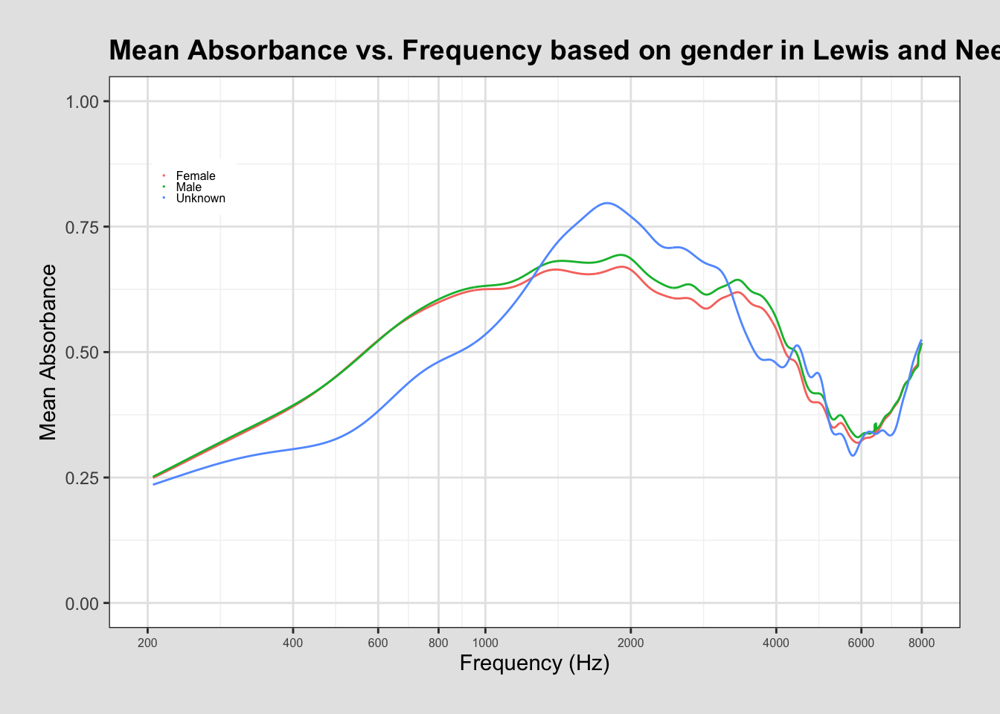

library(dplyr)
library(dbplyr)
library(ggplot2)
library(tidyverse)SQL Project
Using SQL to build a data set and graph in R.
Source: This data comes from the WAI-Database hosted by Smith College (https://www.science.smith.edu/wai-database/home/about/) doi.org/10.35482/egr.001.2022
The figure comes from Susan E. Voss Ear Hear. 2019 Nov-Dec;40(6):1481. doi: 10.1097/AUD.0000000000000790
The goal of this project is to: (1) Recreate Figure 1 from Voss (2020) which comes from Ear and Hearing by Susan E. Voss and the Smith College Picker Engineering Program (2) Create my own graph that groups by a demographic variable in a particular study rather than all absorbances by study (for this project I will use sex)
library(RMariaDB)
library(DBI)
con_wai <- dbConnect(
MariaDB(),
host = "scidb.smith.edu",
user = "waiuser",
password = "smith_waiDB",
dbname = "wai"
)
Measurements <- tbl(con_wai, "Measurements")
PI_Info <- tbl(con_wai, "PI_Info")
Subjects <- tbl(con_wai, "Subjects")Below is the first 5 rows of the measurements table.
SELECT *
FROM Measurements
LIMIT 0, 5;| Identifier | SubjectNumber | Session | Ear | Instrument | Age | AgeCategory | EarStatus | TPP | AreaCanal | PressureCanal | SweepDirection | Frequency | Absorbance | Zmag | Zang |
|---|---|---|---|---|---|---|---|---|---|---|---|---|---|---|---|
| Abur_2014 | 1 | 1 | Left | HearID | 20 | Adult | Normal | -5 | 4.42e-05 | 0 | Ambient | 210.938 | 0.0333379 | 113780000 | -0.233504 |
| Abur_2014 | 1 | 1 | Left | HearID | 20 | Adult | Normal | -5 | 4.42e-05 | 0 | Ambient | 234.375 | 0.0315705 | 103585000 | -0.235778 |
| Abur_2014 | 1 | 1 | Left | HearID | 20 | Adult | Normal | -5 | 4.42e-05 | 0 | Ambient | 257.812 | 0.0405751 | 92951696 | -0.233482 |
| Abur_2014 | 1 | 1 | Left | HearID | 20 | Adult | Normal | -5 | 4.42e-05 | 0 | Ambient | 281.250 | 0.0438399 | 86058000 | -0.233421 |
| Abur_2014 | 1 | 1 | Left | HearID | 20 | Adult | Normal | -5 | 4.42e-05 | 0 | Ambient | 304.688 | 0.0486400 | 79492800 | -0.232931 |
This data shows that each study recorded absorbance of each subject many many times, that is of each ear many times and with many different frequencies.
To recreate Figure 1 from Voss (2020) we must find the mean absorbance for each ear in each study, then plot it against the frequency. So I have to group the data by the study and frequency.
SELECT
Measurements.Identifier,
Frequency,
AVG(Absorbance) AS Mean_Absorbance,
CONCAT(AuthorsShortList, " (", Year, ") ", "N=", COUNT(DISTINCT SubjectNumber, Ear), " ; ", Instrument) AS Label
FROM Measurements
JOIN PI_Info ON Measurements.Identifier = PI_Info.Identifier
WHERE Measurements.Identifier IN (
"Abur_2014", "Feeney_2017", "Groon_2015", "Lewis_2015", "Liu_2008", "Rosowski_2012", "Shahnaz_2006", "Shaver_2013", "Sun_2016", "Voss_1994", "Voss_2010", "Werner_2010"
)
AND Frequency BETWEEN 200 AND 8000
GROUP BY Measurements.Identifier, Frequency, InstrumentThis table, table_one, has the information to add to the legend such as the author list, year, instrument, and is saved as Label.
This code creates a data frame with the information we need for the legend, including the Authors, the year, and the instrument used in the study from PI_Info. Then it is joined with Measurements using JOIN because to have the information from the study as well as the information we need for the legend.
Here I create a new data frame from joining table_one and legend to add the data from legend that we was not present in our initial filtering of table_one. Furthermore, the graph by Voss, instead of having entries with “other” for the Instrument it has “not commercial system”, so I replaced those. The last mutate is to create the legend entries like that of the original graph.
Here I create the graph using ggplot using color = name to make each name have a different associated color rather than study allowing it to be in the legend.
table_one |>
ggplot(aes(
x = Frequency,
y = Mean_Absorbance,
color = Label)) +
geom_line(size = 0.5) +
theme_bw() +
theme(
legend.position = c(0.2, 0.8),
legend.key.size = unit(0.05, 'cm'),
axis.text.x = element_text(size = 6),
legend.title = element_blank(),
legend,text = element_text(size = 7),
panel.grid.major = element_line(color = "grey90"),
panel.grid.minor = element_line(color = "grey95"),
plot.title = element_text(size = 14, face = "bold"),
plot.margin = margin(20,20,20,20),
plot.background = element_rect(fill = "grey90", color = NA),
panel.background = element_rect(fill = "white", color = NA)
) +
labs(
x = "Frequency (Hz)",
y = "Mean Absorbance",
title = "Mean absorbance from each publication in WAI database") +
ylim(0,1) +
scale_x_log10(
limits = c(200, 8000),
breaks = c(200, 400, 600, 800, 1000, 2000, 4000, 6000, 8000)
) This graph is meant to be a recreation of the one by Voss. It shows that as frequency increases and is around 3000 Hz, the mean absorbance of most participants was at its peak. So from the participants in these studies, the best absorption their ears were able to do was at this frequency. Also very quickly after this there is a steep drop in the graph, which may indicate that after this ideal frequency of 3000 Hz it is harder for ears to absorb.
Part 2
Source: Non-invasive estimation of middle-ear input impedance and efficiency by Lewis JD and Neely ST (2015) J Acoust Soc Am. 2015 Aug 19;138(2):977–993. doi: 10.1121/1.4927408
Part 2 of this project explores specifically the study done by Lewis and Neely in 2015. In their study they track sex as a variable. The goal of this section is to create a graph like the one above, but instead of having a line for each study, have a line for each gender in this specific study.
Below is the first 10 rows of the Subjects table of Lewis and Neely’s study.
SELECT *
FROM Subjects
WHERE Identifier = "Lewis_2015"
LIMIT 0, 10| Identifier | SubjectNumber | SessionTotal | AgeFirstMeasurement | AgeCategoryFirstMeasurement | Sex | Race | Ethnicity | LeftEarStatusFirstMeasurement | RightEarStatusFirstMeasurement | SubjectNotes |
|---|---|---|---|---|---|---|---|---|---|---|
| Lewis_2015 | 1 | 2 | 25 | Adult | Female | Caucasian | NonHispanic | Normal | Normal | Right ear: deep probe placement(session1):2.8989e-05 m^2, shallow placement(session2):4.1712e-05 m^2; Left ear data NA |
| Lewis_2015 | 2 | 2 | 22 | Adult | Female | Caucasian | NonHispanic | Normal | Normal | Right ear: deep probe placement(session1):3.1677e-05 m^2, shallow placement(session2):4.1669e-05 m^2; Left ear data NA |
| Lewis_2015 | 3 | 2 | 37 | Adult | Female | Caucasian | NonHispanic | Normal | Normal | Right ear: deep probe placement(session1):2.2295e-05 m^2, shallow placement(session2):2.9556e-05 m^2; Left ear data NA |
| Lewis_2015 | 4 | 2 | 21 | Adult | Male | Caucasian | NonHispanic | Normal | Normal | Right ear: deep probe placement(session1):2.6597e-05 m^2, shallow placement(session2):3.3578e-05 m^2; Left ear data NA |
| Lewis_2015 | 5 | 2 | 25 | Adult | Female | Caucasian | NonHispanic | Normal | Normal | Right ear: deep probe placement(session1):3.6921e-05 m^2, shallow placement(session2):4.7702e-05 m^2; Left ear data NA |
| Lewis_2015 | 6 | 2 | 45 | Adult | Male | Black | NonHispanic | Normal | Normal | Right ear: deep probe placement(session1):3.1565e-05 m^2, shallow placement(session2):3.2389e-05 m^2; Left ear data NA;Subject identified as black or african american |
| Lewis_2015 | 7 | 2 | 33 | Adult | Male | Caucasian | NonHispanic | Normal | Normal | Right ear: deep probe placement(session1):2.2472e-05 m^2, shallow placement(session2):2.8156e-05 m^2; Left ear data NA |
| Lewis_2015 | 8 | 2 | 26 | Adult | Female | Asian | NonHispanic | Normal | Normal | Right ear: deep probe placement(session1):3.3991e-05 m^2, shallow placement(session2):3.7724e-05 m^2; Left ear data NA;Subject did not differentiate between Chinese and Asian |
| Lewis_2015 | 9 | 2 | 25 | Adult | Female | Caucasian | NonHispanic | Normal | Normal | Right ear: deep probe placement(session1):3.2203e-05 m^2, shallow placement(session2):3.9391e-05 m^2; Left ear data NA |
| Lewis_2015 | 10 | 2 | 27 | Adult | Female | Caucasian | NonHispanic | Normal | Normal | Right ear: deep probe placement(session1):1.8787e-05 m^2, shallow placement(session2):3.0184e-05 m^2; Left ear data NA |
To create this visualization I first create a new data frame table_two which is all the frequencies and mean absorbances for the Lewis_2015 study joined with Measurements to obtain the Mean_Absorbance for each frequency as observed in part 1, however, this section adds the additional group of “Sex”.
SELECT
Measurements.Identifier,
Frequency,
AVG(Absorbance) AS Mean_Absorbance,
Sex,
AuthorsShortList
FROM Measurements
JOIN PI_Info ON Measurements.Identifier = PI_Info.Identifier
JOIN Subjects ON Subjects.SubjectNumber = Measurements.SubjectNumber
WHERE Measurements.Identifier = "Lewis_2015"
AND Absorbance >= 0
AND Frequency BETWEEN 200 AND 8000
GROUP BY Sex, Identifier, FrequencyUsing this data frame I can use ggplot to plot the data.
table_two |>
ggplot(
aes(
x = Frequency,
y = Mean_Absorbance,
color = Sex)) +
geom_line() +
labs(title = "Mean Absorbance vs. Frequency based on gender in Lewis and Neely's 2015 study", y = "Mean Absorbance", x = "Frequency (Hz)") +
scale_x_log10(limits = c(200, 8000),
breaks = c(200, 400, 600, 800, 1000, 2000, 4000, 6000, 8000)) +
ylim(0,1) +
theme_bw() +
theme(
legend.position = c(0.1, 0.8),
legend.key.size = unit(0.05, 'cm'),
axis.text.x = element_text(size = 6),
legend.title = element_blank(),
legend,text = element_text(size = 10),
panel.grid.major = element_line(color = "grey90"),
panel.grid.minor = element_line(color = "grey95"),
plot.title = element_text(size = 14, face = "bold"),
plot.margin = margin(20,20,20,20),
plot.background = element_rect(fill = "grey90", color = NA),
panel.background = element_rect(fill = "white", color = NA)
)
This graph has three different colored lines. One for female, male and unknown (possibly all the participants whose genders were not recorded). This graph shows that all three of the sexes have similar Mean Absorbances at frequencies. However, it appears that the unknown gender has much more fluctuations than the other two. This could be due to the mixture of genders that are in this group, or that it may be larger than the others. Zooming into the female and male lines, we can see that the male line is generally above the female line from 1000 Hz to 6000 Hz. However, at most other points the lines are almost identical.